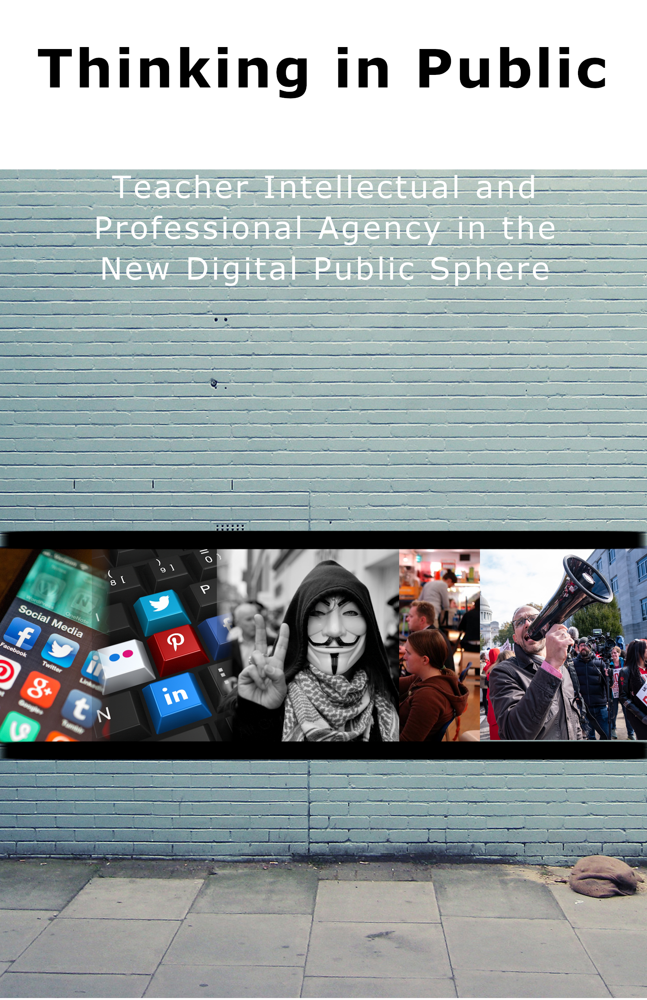
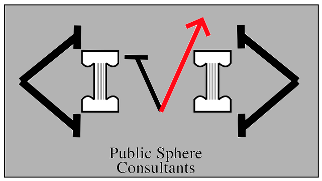

I tried to imagine that what my dissertation project could morph into if I put my mind to it. Hence, my study of teachers' shaping and sharing ideas of public concern in online public sphere could be a book about that topic and the basis for a consulting firm.
For the book, I tried to match the collage with the semantic/thematic content by searching the Photobucket site Dr. L suggested for images related to "protest", "teacher strikes", "social media", and a few other terms. After all, my thesis dives deeply into social media spaces and teacher activism. I chose the background as it was one of the large images returned for searches of "public square". While it looks like the most foreboding "public square" of all time, and was a completely inappropriate search result in my mind, I liked the starkness of the image and thought it would provide a nice contrast with the more colorful images in the collage.
I imported each collage image as a separate layer. I used the layer/scale feature made sure they were all the same height (500 pixels), then arranged them. I used mask channels to facilitate the slight blurring/gradient you see between the collage images. To make them stand out even more, I painted a solid black line. Gimp is so much more complicated than PaintBrush that I had to watch various tutorials to do all of the above--including drawing a straight line! The fonts are not my favorite, but given that Gimp is not designed to do precise document layout like QuarkXpress or Adobe, I can live with it. I do like the contrast between the top title and the subtitle. I had to use two separate text boxes to create this effect.

As to the vector logo, I had never worked with these types of images before. Essentially everything in the logo--save for the font--was created by using lines, bending lines, duplicating lines, and coloring lines. The "C", backwards "C" and the "V" are all basically the same letter. The backward "C" is flipped horizontally, the "V" is flipped vertically, but then I made a few adjustments both to add color and connect it with the thematic/semantic content. The "roman"-ish letters obviously connect with a classical/neoclassical aesthetic--the Greeks and Romans contribute to our modern sense of public/private, per Habermas.
The columns are in line with that aesthetic. Creating these was actually kind of fun. I made the two thick horizontal lines of the columns, then I made a "box" of sorts for the top. I then used the "bend tool" to make the lower curve on top of the columns. I grouped the lines, copied, and rotated 180 degrees, then grouped and copied the whole column to create two. The upward shooting "V" with the arrow on the top is meant to convey progress--after all, why bother participating in the public sphere if you don't want to have a more thoughtful, nuanced, and effective public discourse?! I placed this colored line in the V both because it is somewhat symmetrical, but also leads the eye toward the right--in English, as we read from left to right, I see this as thematically connected to the importance of the literate culture that informs an ideal public sphere. The "future" reading direction of the logo is emphasized and it points up, connecting with Enlightenment conceptions of progress.
